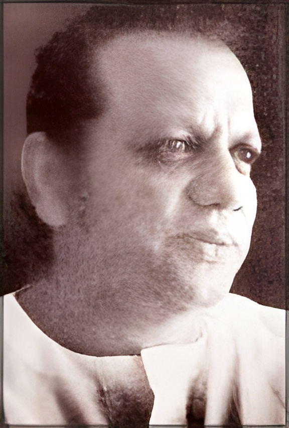
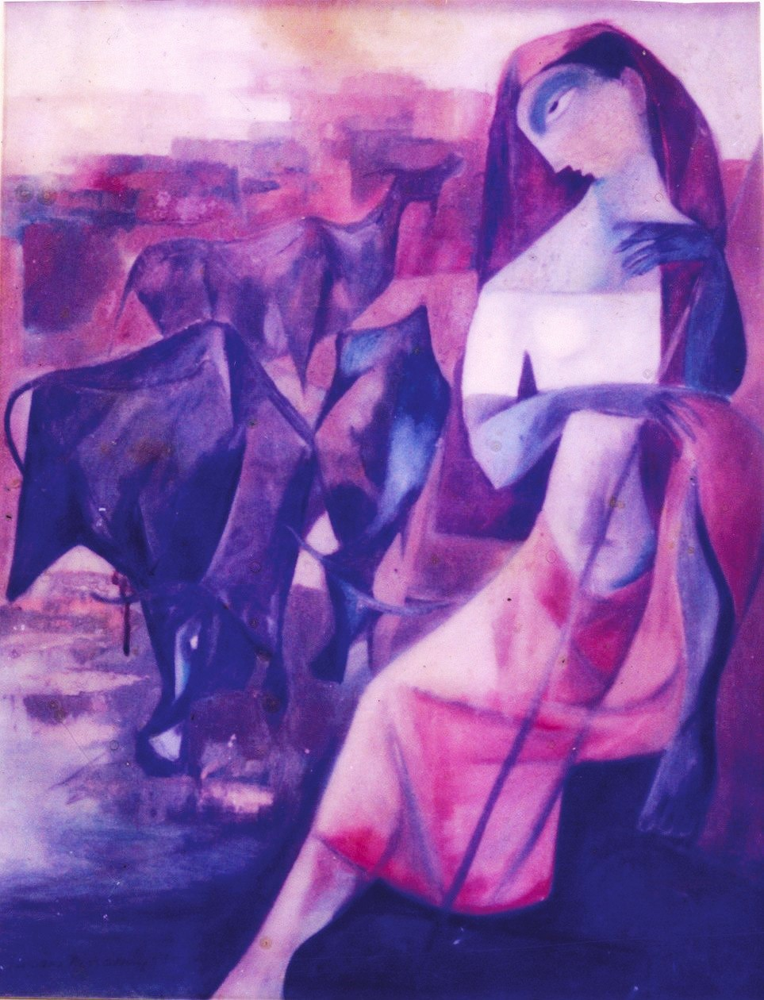
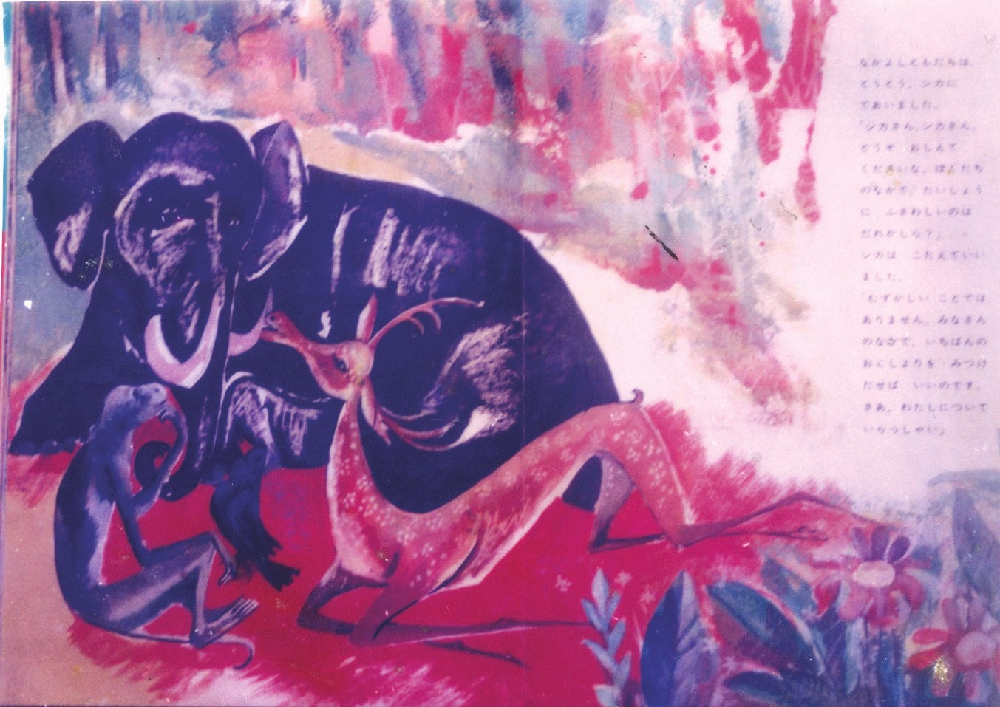
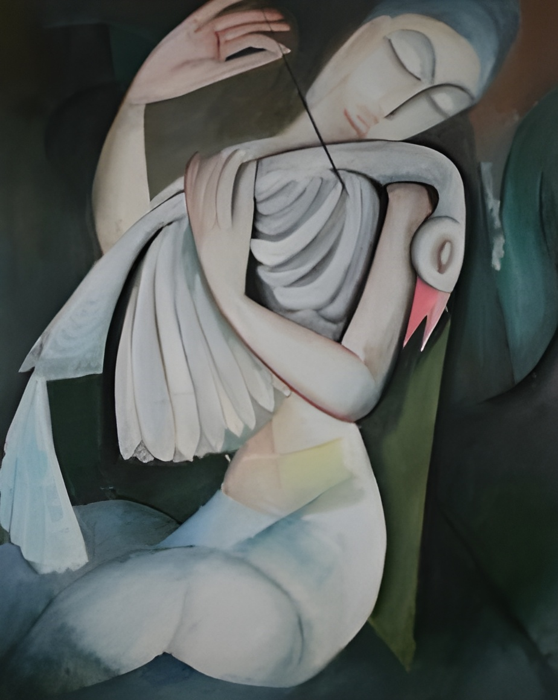
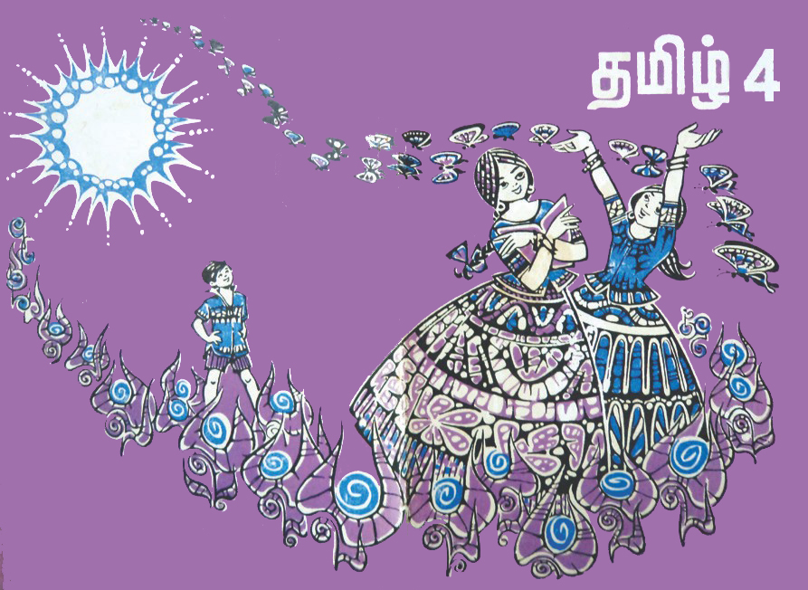
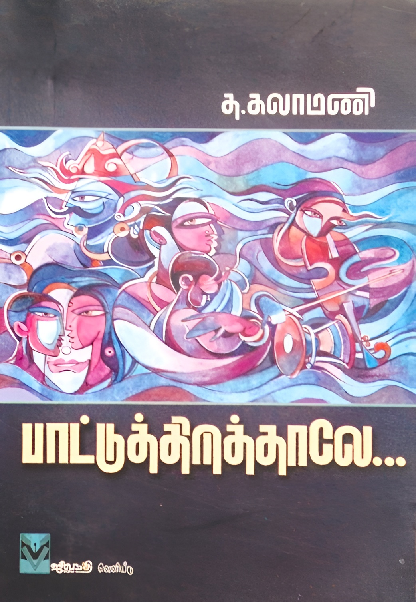
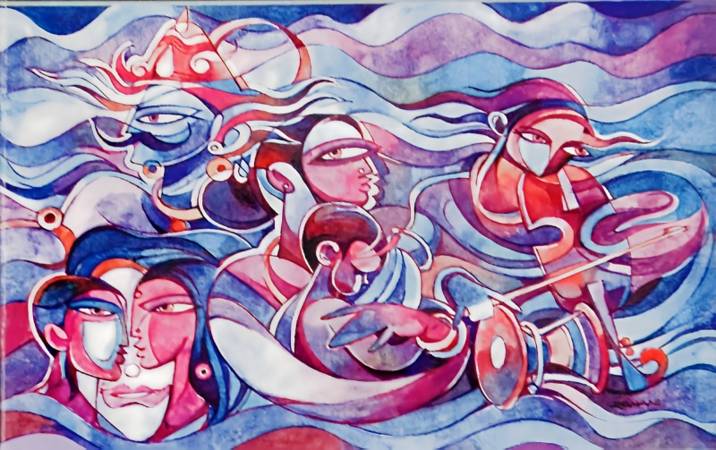

සුමන දිසානායක (1922-1995)
- වර්ෂ 1922 දී මාතර කඹුරුපිටියේ උපත ලැබූ සුමන දිසානායක සන්නිදර්ශන චිත්ර කලාවට නව්යතාවක් ඇති කළ පුරෝගාමී ශිල්පියෙක් වෙයි.
- මරදාන කාර්මික විද්යාලයෙන් චිත්ර කලාව පිළිබඳ උසස් අධ්යාපනය ලබා ගන්නා ඔහු, පසුව එංගලන්තය හා නෙදර්ලන්තය ආශ්රිතව ද චිත්ර කලාව පිළිබඳ පුහුණුව ලබා ගති.
- අධ්යාපන දෙපාර්තමේන්තුවේ චිත්ර කලා පරීක්ෂක හා ග්රන්ථ ප්රකාශන මණ්ඩලයේ චිත්ර කලා අධ්යක්ෂක ධූරය ද ඔහු විසින් හොබවන ලදී.
- ඔහු සිය නිර්මාණ සඳහා තෙල් සායම්, දිය සායම් හා ඇකුලික් ආදී විවිධ වර්ණ මාධ්ය භාවිත කරමින් නිර්මාණකරණයේ යෙදුණු ශිල්පියෙකි.
- ඔහුගේ නිර්මාණ කොටස් දෙකකි. එනම් තෙල් සායම් චිත්ර හා සන්නිදර්ශන චිත්ර වශයෙනි.
- මීට අමතර ව සරල හා නූතන හැඩවලට අයත් බතික් නිර්මාණයන්ගේ ආරම්භක පුරෝගාමියා ලෙස ද සැලකෙයි.
- ඔහු විසින් නිර්මාණය කරන ලද සන්නිදර්ශන සඳහා චිත්ර පොත් පිටකවර, ළමා පොත් හා සඟරා ආදිය ඇසුරින් දැකිය හැකි ය.
- ඔහු ළමා පොත් නිර්මාණ සඳහා නවතම ශෛලියකින් යුතු චිත්ර ආරක් බිහි කළ ශිල්පියෙකු ලෙස ද හැඳින් වේ.
- සරල හා වියුක්ත හැඩතල මෙන් ම වර්ණ සංයුතිය ද ඉතා නිර්මාණශීලී ව ඔහු සිය සන්නිදර්ශන, නිර්මාණ කරණය සඳහා භාවිත කර ඇත.
- මුල්කාලයේ නිර්මාණ සඳහා ස්වභාවික රූපක ද පසුකාලීන නිර්මාණ සඳහා අධිතාත්වික හැඟීම ලබා දෙන සමාධිගත වින්දනයකට තුඩු දෙන හැඩතල ද භාවිත කරන ලද නිර්මාණ වේ.




වෛතිසවරම් සිවසුබ්රමනියම් (රමණි) 1942
- වර්ෂ 1942 දී අලවෙට්ටි ප්රදේශයේ උපත ලැබූ සිවසුබ්රමනියම් 1961 දී යාපනය 'විඩුමුරෙයි කාල ඕවියක් කලහම 'හිදී මූලික අධ්යාපනය ද, චිත්ර කලාව පිළිබඳ උසස් අධ්යාපනය රජයේ ලලිත කලා ආයතනයෙන් ලබා ගත්තේ ය.
- රජයේ කලා ආයතනයේ චිත්ර ඇඳීම පිළිබඳ වැඩිදුරටත් හැදෑරූ ඔහු පසුකාලීන ව යාපනයේ සෞන්දර්ය අධ්යාපන නියෝජ්ය අධ්යක්ෂ ධූරය ද දැරුවේ ය.
- ඔහු සිතුවම් ඇඳීමට අමතර ව දේවරූප බොහොමයක් නිර්මාණය කළ මූර්ති ශිල්පියෙක් ද වේ.
- ස්වාභාවිකවාදී ශෛලිය සමග සංකලනය වූ නූතන ශිල්ප ක්රම සමග තමාට ම ආවේණික වූ නිර්මාණ ශෛලියක් ඔහුගේ නිර්මාණ ඇසුරින් හඳුනා ගත හැකි ය.
- ඔහුගේ මුල්ම සන්නිදර්ශන සිතුවම වන්නේ රාධා පුවත්පතෙහි පළ කළ නිර්මාණයකි. ඔහු දෙමළ පුවත්පත් ගණනාවක් සඳහා ද චිත්ර නිර්මාණය කර ඇත.
- පොත් පිටකවර නිර්මාණය පිළිබඳව නව අත්හදා බැලීම් කළ ඔහු විසින් විවිධ දෙමළ පොත් සඳහා පිටකවර නිර්මාණය කරන ලදී.
- ඔහුගේ නිර්මාණ අතර අධ්යාපන ප්රකාශන දෙපාර්තමේන්තුව හා සම්බන්ධව කරන ලද පොත් කවර සුවිශේෂ නිර්මාණ ලෙස දැක්විය හැකි ය.
- මෙම නිර්මාණ ඔහුටම ආවේණික නිර්මාණ ශෛලීය ලක්ෂණයන්ගෙන් යුතු ව නිම කරන ලද ඒවා වේ.


